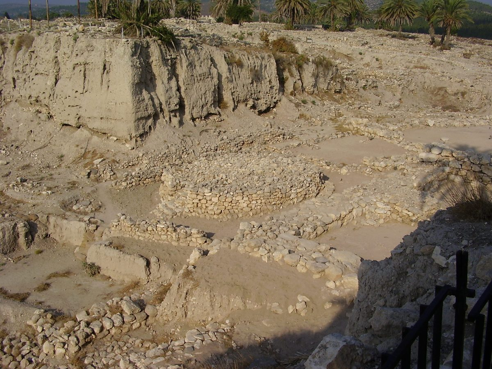

Ezekiel 6 — The Mister Translation

An open-air altar of the kind of site the Bible calls a high place. It stands in what the photographer calls a Canaanite temple, so it is not offered as one of the altars this chapter speaks to.

Translator’s Notes
⭐ Set your face. “Set your face” (sim panekha) stands in nine verses of the Hebrew Bible, all of them in Ezekiel, and this is the first; at 4:3 and 7 the English ‘set your face’ renders a different verb. The hearers are not people. “Mountains of Israel” stands in fifteen verses of the Hebrew Bible, again all in Ezekiel, beginning here. The NIV has “set your face against the mountains of Israel” where the Hebrew preposition is ‘toward’ or ‘to’; the ASV has “set thy face toward the mountains of Israel”.
⭐ The fourfold address. Mountains, hills, streambeds and valleys. “To the mountains and to the hills, to the streambeds” stands in three verses: here, and Ezekiel 36:4 and 36:6 (both now on these pages). Chapter 36 speaks to the same landscape again, and promises it the reverse of what is said here: branches, fruit, people and rebuilt ruins. In this verse the Hebrew text we follow carries two forms of ‘valleys’ side by side, the one written (ketiv) and the one read (qere), and the page prints both. The ASV has “to the watercourses and to the valleys”, the NIV “to the ravines and valleys” and the Douay “to the rocks, and the valleys”.
⚠ High places. The sword is aimed at the bamot, the open-air sanctuaries (bamah; the high places). The mountains are addressed because of what stands on them.
⭐ Leviticus 26 comes due. The warning of Leviticus 26:30 (now on these pages) reads: “And I will destroy your high places, and cut down your incense altars, and cast your dead bodies on the dead bodies of your idols”. Here are the same high places, incense altars, dead bodies and idols. The next verses there lay the cities waste (26:31) and scatter the people among the nations with a sword drawn after them (26:33), which verses 6 and 8 answer.
⭐ Incense altars. Chammanim (chamman). “Your incense altars” (chammanekhem) stands in three verses of the Hebrew Bible: Leviticus 26:30 and verses 4 and 6 here. The older versions connect the word with the sun: the ASV has “your sun-images shall be broken”, the KJV “your images shall be broken”, the NIV “your incense altars will be smashed”, the NWT 2013 “your incense stands will be broken” and the Douay “your idols shall be broken in pieces”. This translation keeps the rendering of its Leviticus page.
⭐ Idols. Gillulim, the contemptuous word whose letters are those of ‘dung’ (gillulim), comes in verses 4, 5, 6, 9 and twice in 13. The NWT 1984 has “dungy idols” and the NWT 2013 “disgusting idols”. The corpses are laid in front of them: the dead lie before gods that did not save them. Bones scattered around altars recall what 1 Kings 13:2 (now on these pages) had foretold for the altar at Bethel, men’s bones burned on it.
⚠ “Made desolate”. In verse 6 the second verb said of the altars, ye’shemu, is spelled like asham, to be guilty; the letters vy’shmw stand in three verses: here, Isaiah 24:6 and Ezekiel 25:12, where it concerns guilt. Here it is read beside the verbs of ruin around it, as the ASV does with “your altars may be laid waste and made desolate” and the NWT 1984 with “your altars may lie desolated”. The sound of guilt may be intended; the verse does not say.
⭐ The shift of person. The speech says ‘your’ to the mountains and their people, yet verse 5 has ‘their idols’ for the sons of Israel and at once returns to ‘your bones’. Verse 13 shifts again: ‘you will know’, when ‘their slain’ are among the idols. In this chapter the recognition formula comes four times, in verses 7, 10, 13 and 14, turning between ‘you’ and ‘they’.
⭐ Some who escape. The judgment is not total. The Hebrew says ‘I will leave over’ and speaks of peletei cherev, escapees of the sword (peletah); a noun ‘remnant’ does not stand here in the Hebrew, though the KJV and ASV supply “a remnant”.
⚠ “I was broken”. The form nishbarti stands in this one verse. It is passive in shape, ‘I was broken’, yet it is followed by the object marker before ‘their whoring heart’, so the grammar is hard. This translation keeps ‘I was broken by’, with the ASV (“how that I have been broken with their lewd heart”). The NIV has “how I have been grieved by their adulterous hearts”, the NWT 2013 “I was brokenhearted over their unfaithful heart”, and the Douay turns it round: “I have broken their heart that was faithless”. ‘Whoring’ is the blunt word of the metaphor (zanah), used of the heart and of the eyes.
⭐ Loathing. “And they will loathe themselves in their own sight” (venaqotu bifnehem) stands in this one verse. The second-person form, ‘you will loathe yourselves’, stands in two verses: Ezekiel 20:43 and 36:31 (both now on these pages). Memory comes first, then the loathing.
⭐ Not for nothing. Lo el-chinnam (chinnam): the threat was not empty. The ASV has “I have not said in vain that I would do this evil unto them” and the NIV “I did not threaten in vain to bring this calamity on them”. Verse 10 closes with a paragraph break.
⚠ A gesture and a cry. The prophet is to strike with his hand, stamp with his foot and say ach, ‘Alas’. The words alone do not say whether this is grief or something harsher; a later oracle describes Ammon clapping hands and stamping feet in glee over the land of Israel (Ezekiel 25:6), with a different verb for the clapping. The ASV has “Smite with thy hand, and stamp with thy foot, and say, Alas!”, the NIV “Strike your hands together and stamp your feet” and the NWT 2013 “Clap your hands and stamp your foot and bemoan”.
⭐ The three. The phrase “by the sword, by famine and by pestilence”, in this exact form, stands in seven verses of the Hebrew Bible: six in Jeremiah, among them Jeremiah 27:13 (now on these pages), and this one (dever). Ezekiel 5:12 (now on these pages) had already named the three in the sign of the hair: one third of the city dies by pestilence and famine, one falls by the sword, and one is scattered; verse 12 here assigns the three by distance: far off, near, and what is left.
⚠ Besieged or kept. The last group is vehannish’ar vehannatsur, ‘he who is left and natsur’. The verb natsar means to guard or keep; its passive is also used of a city blockaded, ‘like a city under siege’ (Isaiah 1:8, now on these pages). This translation keeps ‘besieged’ with the KJV (“he that remaineth and is besieged”). The NIV has “anyone who survives and is spared” and the NWT 1984 “that has been safeguarded”. ‘I will spend my fury’ repeats the verb of 5:13.
⭐ Hill and tree. “Leafy tree” (ets ra’anan) stands in eleven verses of the Hebrew Bible, among them Deuteronomy 12:2, the command to destroy such places, and Jeremiah 2:20, where this translation has ‘green tree’ (both now on these pages). “High hill” with the adjective ramah stands in three verses: here, Ezekiel 20:28 and 34:6 (both now on these pages). The thick terebinth is the elah; the ASV has “every thick oak”, the NIV “every leafy oak” and the NWT 1984 “every branchy big tree”.
⭐ The aroma. Reyach nichoach is the soothing aroma of an offering to Jehovah, first at Genesis 8:21 (now on these pages) and the refrain of Leviticus (reyach nichoach). Here the same words are used of offerings to idols. The warning of Leviticus 26:31 had been that Jehovah would not smell their pleasing aromas. The NIV has “offered fragrant incense” and the NWT 2013 “made fragrant offerings to appease”.
⚠ Diblah. The word Divlatah stands in this one verse. Places with related names are Almon-diblathaim (Numbers 33:46, now on these pages) and Beth-diblathaim (Jeremiah 48:22). The Hebrew pointing joins ‘wilderness’ closely to it, ‘the wilderness toward Diblah’, so that the line reads ‘more desolate than’ that wilderness, as in the KJV (“more desolate than the wilderness toward Diblath”). Others read from one place to another: the ASV “from the wilderness toward Diblah” and the NIV “from the desert to Diblah”. The Hebrew letters for d and r are very alike, and some read Riblah, the town in the land of Hamath where Zedekiah’s sons were killed: the TLB has “from the wilderness in the south to Riblah in the north”. This translation prints the name the Hebrew has. The verse, and the chapter, end with a paragraph break.
Patterns worth carrying forward
Where this translation keeps the exact / distinct words: “idols” for gillulim at verses 4, 5, 6, 9 and 13; “high places” at verses 3 and 6; “incense altars” at verses 4 and 6; “sword” at verses 3, 8, 11 and 12; “famine” and “pestilence” at verses 11 and 12; “dwelling places” at verses 6 and 14; and “know that I am Jehovah” at verses 7, 10, 13 and 14.
Echoes paid. The high places, incense altars, dead bodies and idols of Leviticus 26:30; the leafy tree of Deuteronomy 12:2; and the sword, famine and pestilence of chapter 5.
Echoes planted. The mountains spoken to again, this time with a promise, in chapter 36; the self-loathing of 20:43 and 36:31.
Ezekiel 7, now on these pages: “an end”: the end comes upon the four corners of the land.